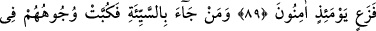
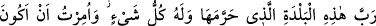

SÛR’A ÜFÜRÜLDÜĞÜ
GÜN
87. Sûr’a üfürüldüğü gün, -Allâh’ın diledikleri müstesna-, göklerde ve yerde
bulunanlar hep dehşete kapılır. Hepsi boyunları bükük olarak O’na gelirler.
88. Sen dağları görürsün de, onları yerinde durur sanırsın. Oysa onlar bulutların
yürümesi gibi yürümektedirler. (Bu,) her şeyi sapasağlam yapan Allâh’ın sanatıdır.
Şüphesiz ki O, yaptıklarınızdan tamamıyla haberdardır.
89. Kim iyilikle (ilâhî huzura) gelirse, ona daha iyisi verilir. Ve onlar o gün
korkudan emin kalırlar.
90. (Rablerinin huzuruna) kötülükle gelen kimseler ise yüzükoyun cehenneme
atılırlar. (Onlara) “Ancak yaptıklarınızın karşılığını görmektesiniz!” (denir).
91. (De ki:) Ben ancak, bu şehrin (Mekke’nin) Rabbine -ki O burayı dokunulmaz
kılmıştır- kulluk etmekle emrolundum. Her şey de zaten O’na âiddir. Bana
müslümanlardan olmam “ emredildi.
92. “Ve Kur’an’ı okumam (emredildi). Artık kim doğru yola gelirse, yalnız
kendisi için gelmiş olur; kim de saparsa ona de ki: Ben sadece uyarıcılardanım.
93. Ve şöyle de: Hamd Allâh’a mahsustur. O, âyetlerini size gösterecek, siz de
onları görüp tanıyacaksınız (ama artık faydası olmayacaktır). Rabbin,
yaptıklarınızdan habersiz değildir.